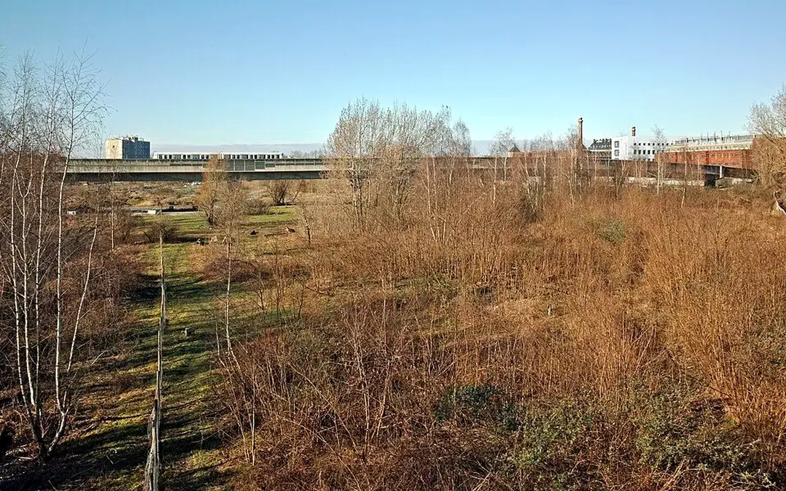

Raison d'être
Pourquoi TVF existe
Comprendre le problème public auquel Territoires Vivants France veut répondre : des lieux utiles restent vacants, des ressources sont perdues et des territoires manquent de moyens pour agir ensemble.

Le constat
La France ne manque pas seulement de projets ; elle manque souvent de liens entre les ressources, les besoins et les acteurs
Dans de nombreuses communes, un logement peut rester vide alors qu'une famille cherche une solution, un commerce peut rester ferm² alors qu'un centre-ville manque d'activité, une friche peut demeurer inaccessible alors qu'un quartier manque d'espaces utiles, et des matériaux encore utilisables peuvent être détruits alors qu'une association ou un chantier local en aurait besoin.
TVF naît de cette tension : l'utilité existe, mais elle est fragmentée. Les informations sont dispersées, les responsabilités sont parfois floues, les moyens financiers manquent, les propriétaires ne savent pas toujours vers qui se tourner et les collectivités doivent prioriser avec des budgets contraints.
Des enjeux nationaux qui demandent une lecture locale
Ces chiffres ne signifient pas que chaque bien peut être repris, que chaque matériau peut être réemployé ou que chaque projet est faisable. Ils indiquent l'ampleur d'un sujet national qui doit être travaillé commune par commune, avec des données datées, des droits respectés et des moyens réalistes.
Les causes sont rarement uniques
Information dispersée
Les données existent mais elles sont souvent réparties entre fichiers publics, connaissances locales, propriétaires, services techniques et observations de terrain.
Coûts de remise en état
Travaux, normes, diagnostics, assurances et charges d'exploitation peuvent bloquer des biens qui ont pourtant un potentiel d'usage.
Propriété complexe
Indivisions, successions, copropriétés, dettes, incertitudes juridiques ou absence de contact peuvent ralentir toute solution.
Financements fragmentés
Subventions, mécénat, fonds propres, dons et participation citoyenne ne se mobilisent pas sans dossier solide et gouvernance claire.
Usages mal définis
Un lieu vide ne devient utile que si son usage répond à un besoin local : logement, activité, association, formation, culture ou service.
Manque de suivi
Sans indicateurs, les bonnes intentions ne suffisent pas. Il faut tracer les signalements, décisions, conventions et résultats.
La vacance produit des effets sociaux, économiques et environnementaux
Social
Un patrimoine inutilisé peut accentuer le manque de locaux associatifs, de solutions temporaires, de services et de lieux de rencontre.
Économique
Des commerces fermés fragilisent les rues actives, réduisent les flux et peuvent décourager de nouvelles implantations.
Environnemental
Ne pas réutiliser l'existant augmente la pression sur les ressources, les déchets et l'artificialisation lorsque des alternatives sont possibles.
Une méthode en six étapes, avant toute promesse
Identifier
Repérer lieux, biens et ressources.
Cartographier
Structurer les informations utiles.
Qualifier
Vérifier les droits, risques et besoins.
Mobiliser
Relier les acteurs concernés.
Conventionner
Clarifier rôles, usages et durée.
Mesurer
Publier seulement les résultats prouvés.
Des exemples pour comprendre les situations visées
Cas type : logement vacant
Un propriétaire possède un logement dégradé mais ne peut pas financer seul la remise en état. TVF peut Étudier un accompagnement, des matériaux de réemploi et une convention d'usage temporaire, sans transfert de propriété.
Cas type : local commercial ferm²
Une cellule vide peut être qualifiée pour tester un usage de proximité : atelier, association, commerce temporaire ou formation, si les conditions juridiques et techniques le permettent.
Cas type : matériaux disponibles
Une entreprise propose des surplus. TVF ne les distribue pas automatiquement : les ressources sont orientées vers des projets validés selon leur état, leur traçabilité et leur utilité territoriale.
Des données publiques, pas des affirmations isolées
INSEE, dossiers complets territoriaux — population, logement, emploi, revenus.Zéro Logement Vacant — outil public de mobilisation des logements vacants.Cartofriches, Cerema — repérage des friches.SDES, bilan national des déchets — données environnementales.ANCT, Action Cœur de Ville — revitalisation des centralités.
Passer du constat à l'action
TVF se construit avec les territoires. Un signalement, une ressource, une compétence ou une proposition de coopération peut devenir utile s'il est qualifié et inscrit dans un cadre clair.
Ce que cette page permet de décider
| Point à comprendre | Application pour Pourquoi TVF existe | Document ou action utile |
|---|---|---|
| Besoin traité | Clarifier le sujet, le public concerné et les limites d'intervention. | Fiche de lecture et sources. |
| Cadre de coopération | Identifier les parties, les responsabilités, les pièces et les conditions de validation. | Trame de convention ou fiche projet. |
| Passage à l'action | Orienter vers le bon parcours sans multiplier les démarches. | Formulaire, contact ou document téléchargeable. |
Lecture opérationnelle
Du constat à l'action : Pourquoi TVF existe
Cette page donne un point d'entree pratique vers la méthode, les documents et les parcours TVF.
Problème
Les acteurs ont besoin d'une information claire pour savoir quoi proposer, comment agir et quelles limites respecter.
Donnée utile
Repere : les données et résultats TVF doivent etre dates, sources et verifiables avant publication.
Solution TVF
TVF oriente la demande vers le bon parcours, les bons documents et les bonnes responsabilités.
Méthode
Chaque suite doit etre qualifiée : besoin, interlocuteur, territoire, pieces, convention et calendrier.
Acteurs
Habitants, propriétaires, collectivités, entreprises, associations, financeurs et benevoles.
Impact visé
Faire gagner du temps, éviter les malentendus et transformer une intention en action realiste.
FAQ
Questions fréquentes
Pourquoi TVF existe précise le cadre institutionnel, les limites et les garanties de transparence.
Pourquoi cette page est-elle structurante ?
Pourquoi TVF existe fixe une partie du cadre institutionnel : responsabilités, limites, méthode, transparence ou conditions d'action.
Ces informations peuvent-elles évoluer ?
Oui. Pourquoi TVF existe doit rester modifiable après les formalités officielles, les assemblées, les conventions et les premières actions documentées.
Comment TVF évite-t-elle les promesses excessives ?
Pourquoi TVF existe sépare clairement les ambitions, les dispositifs selon calendrier de déploiement, les données publiques, les estimations et les résultats vérifiés.
Passer à l’action
Choisir le parcours adapté à votre rôle
Chaque demande doit être orientée vers un cadre clair : besoin territorial, propriétaire, ressource, financement, bénévolat ou coopération institutionnelle.